Implicit Relationship f(x, y, z) = 0#
Description#
This type is for graphing implicitly defined expressions of the form \(f(x, y, z) = 0\). The expression must be in the variables x, y and z and it is assumed that the expression is set to 0 for the relationship.
Insert/Edit Dialog#
The Insert/Edit Dialog for this type is shown below.
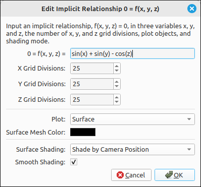
Implicit Relationship Dialog Box#
The first input is for the expression, after that there are options for the number of grid divisions in the x, y, and z directions, plot object, mesh color, shading mode and smooth shading.
The program first evaluates the expression over the cubic grid formed by the coordinate axes ranges, then uses a cube-marching algorithm to interpolate and form a mesh that will be used to plot the surface.
Options#
X, Y, and Z Grid Divisions#
The variables these set depend on the selection of the function type, the labels will change when the function type selector is changed. As with implicitly defined curves in 2D, the more gird divisions the better the interpolation but also the more calculations to be completed, and hence slower for animations, panning, and scaling.
Plot#
Surfaces have three options to what is viewed, the filled in surface, a wire-frame grid, or both the surface and the grid.
Surface#
This option plots the filled-in surface defined by the expression and selected surface options. For example, the surface defined by the function \(z = f(x, y) = x^{2} - y^{2}\) with just the surface plot option is pictured below.
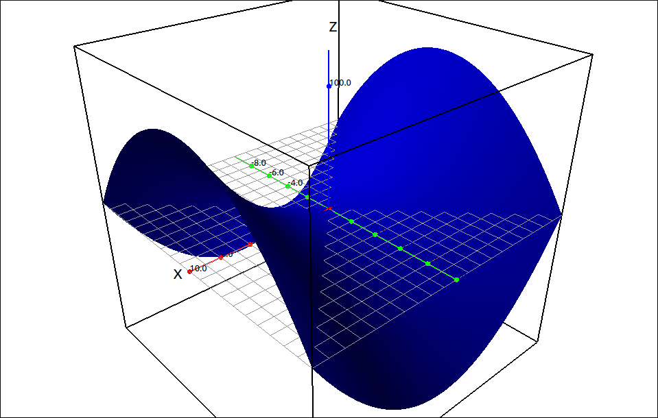
Surface Plot#
Grid#
This option plots the wire-frame of the surface defined by the expression and selected surface options. For example, the surface defined by the function \(z = f(x, y) = x^{2} - y^{2}\) with just the grid plot option is pictured below.
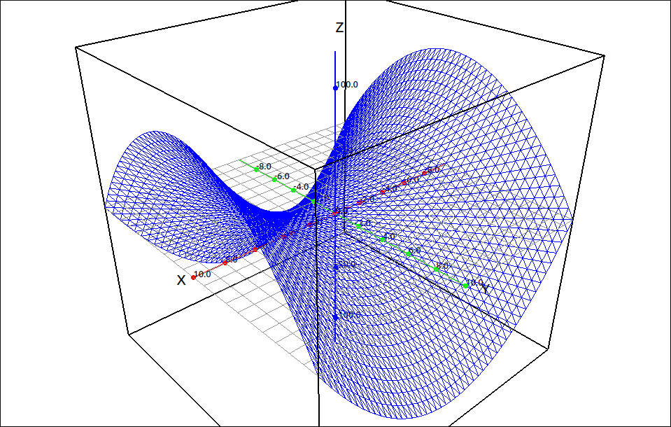
Grid Plot#
This program does not have a transparent surface feature that allows the user to see through the surface to other surfaces and lines. The reason we did incorporate this ability is that to do transparency well you need to use global image rendering techniques that require many more calculations and hence slow the system down considerably. We are sticking with strictly local graphing techniques which are very fast. In some applications you may want to view through one or more surfaces, the grid option is a nice and quick way to do that.
Surface & Grid#
This option plots the filled-in surface along with the wire-frame of the surface defined by the expression and selected surface options. For example, the surface defined by the function \(z = f(x, y) = x^{2} - y^{2}\) with the surface and grid plot option is pictured below.
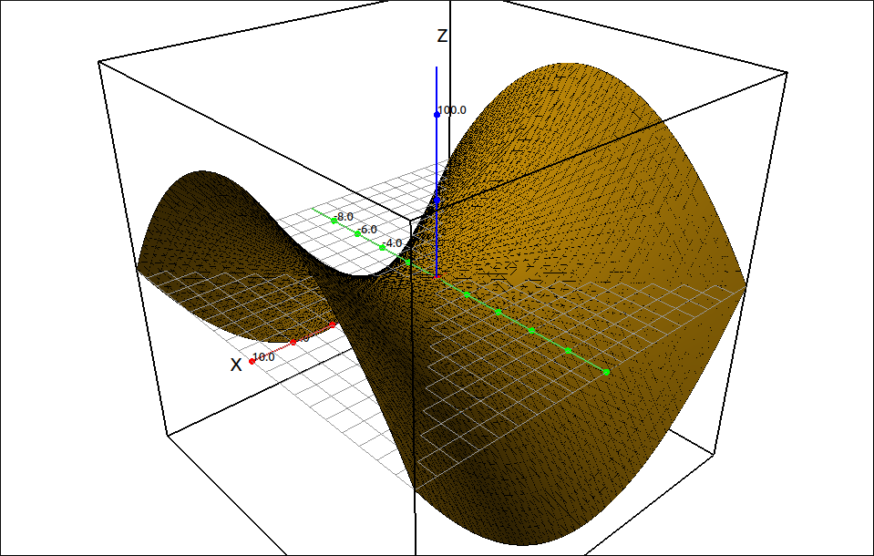
Surface and Grid Plot#
The color of the grid is defined by the mesh color option of the surface. One artifact that is clear from the image is that the grid portion drops out at places. This is called “stitching” and is a common problem when graphing two objects that are in the same position. When graphing objects in 3D, as solid objects, the system determines which portions are closer to the camera, graphs these and hides objects that are behind them. So when two objects are in the same place one is in front of the other at times and at other times the second is in front of the first. This swapping back and forth between the two is what produces the stitching. In general, you probably will not use this mode too often, nonetheless it is here if you want it.
Surface Mesh Color#
The surface mesh color is the color of the grid that is used if both the surface and grid are selected for plotting. This color should complement the color of the surface.
Surface Shading#
Surface shading simply refers to how colors are being used to display the surface. It is this color manipulation that gives the image a three-dimensional feel even though it is being viewed on a two-dimensional surface. For different applications you may want to change the shading mode to better see the mathematical aspects of the surface. This program offers seven different shading modes or algorithms.
Shade by Camera Position#
This mode shades the surface according to the position of the camera and the curve of the surface. The surface base color is the one selected. The surface is rendered with a non-shiny finish and two simulated light sources, a simplified Phong shading model. For example,
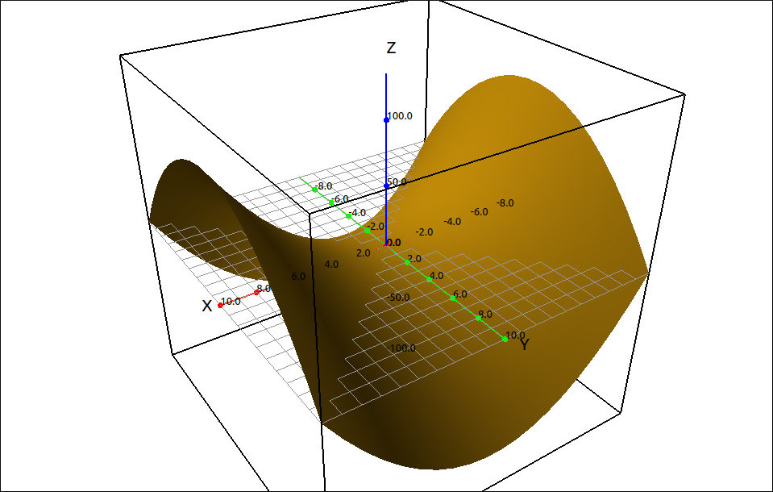
Shade by Camera Position#
Shade by Surface Height#
This mode shades the surface according to the height (z-value) of the surface. In this mode the base color is not used. The colors used are the standard rainbow ROYGBIV from top to bottom. So the red portions are at the top and the violet portions are at the bottom. For example,
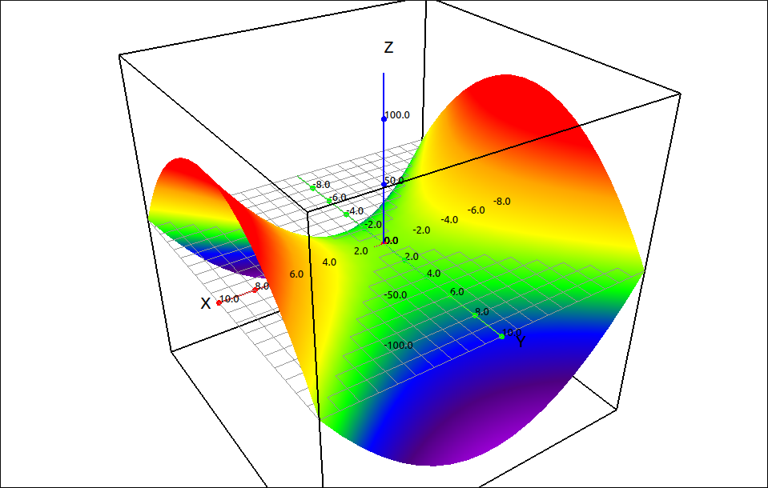
Shade by Surface Height#
This mode would be useful if you wanted to produce a color contour map of the surface. For example,
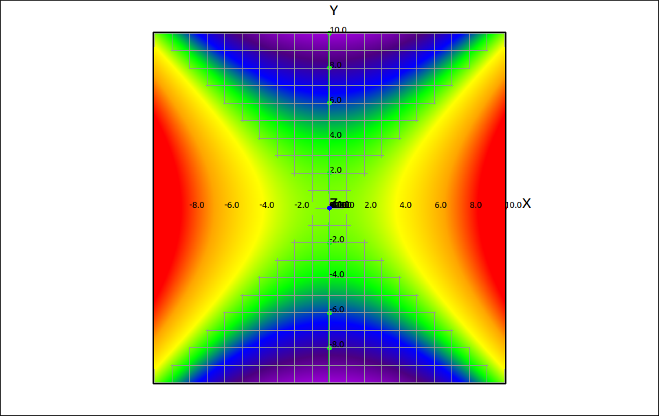
Shade by Surface Height for a Color Contour Map#
Shade by Camera and Surface Height#
This mode combines the surface height algorithm with the camera position algorithm. In this mode the base color is not used. The colors used are the standard rainbow ROYGBIV from top to bottom and then these colors are changed in intensity to simulate two additional light sources. For example,
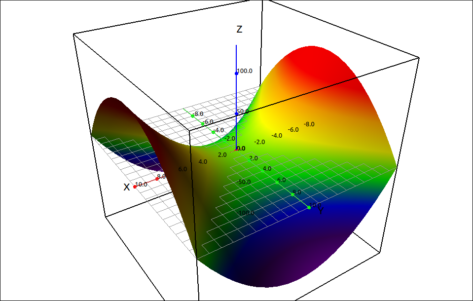
Shade by Camera and Surface Height#
Shade by View Height#
This mode shades the surface according to the height (z-value) of the surface within the viewing cube. In this mode the base color is not used. The colors used are the standard rainbow ROYGBIV from top to bottom but instead of this color map being applied to the minimum and maximum z-values of the surface the map is applied to the minimum and maximum z-values of the viewing cube. For example,
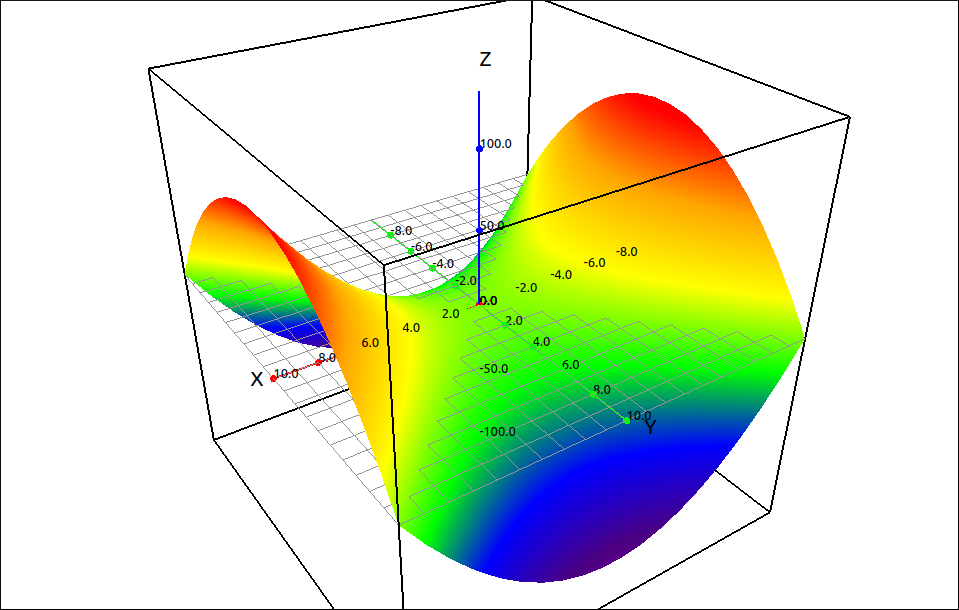
Shade by View Height#
Note that in this mode if we translate the image vertically the surface is at a different part of the color map and hence is shaded differently. In surface height mode this would not happen.
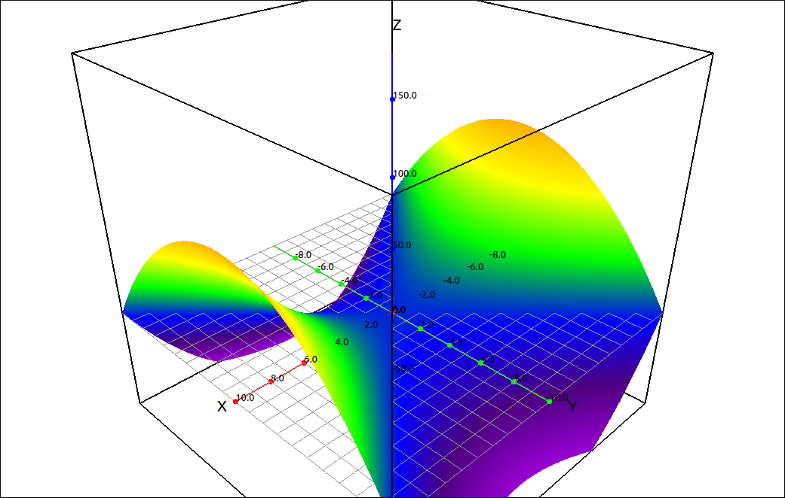
Shade by View Height Translated#
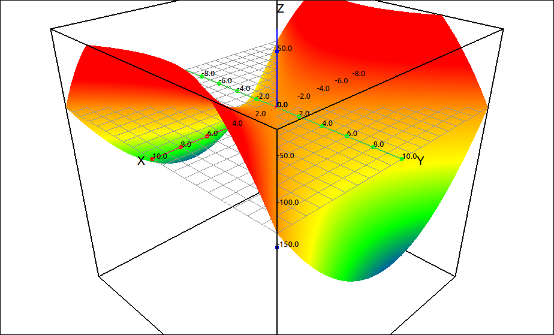
Shade by View Height Translated#
This mode would be useful if there are several surfaces using this mode in the view, then the colors can be used to compare the heights between the surfaces.
Shade by Camera and View Height#
This mode combines the view height algorithm with the camera position algorithm. In this mode the base color is not used. The colors used are the standard rainbow ROYGBIV from top to bottom of the view and then these colors are changed in intensity to simulate two additional light sources. For example,
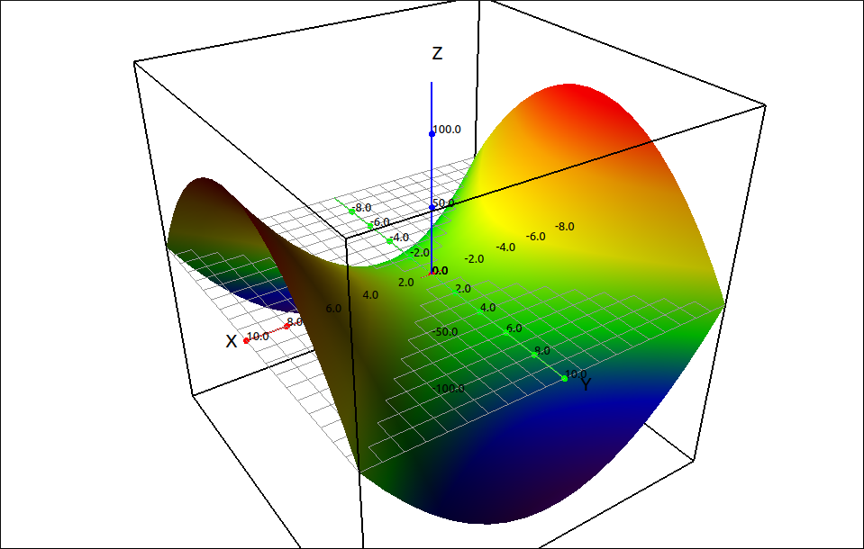
Shade by Camera and View Height#
Shade by Surface Normals#
This mode shades the surface by the surface normals, vectors that are perpendicular to the surface. In this mode the base color is not used.
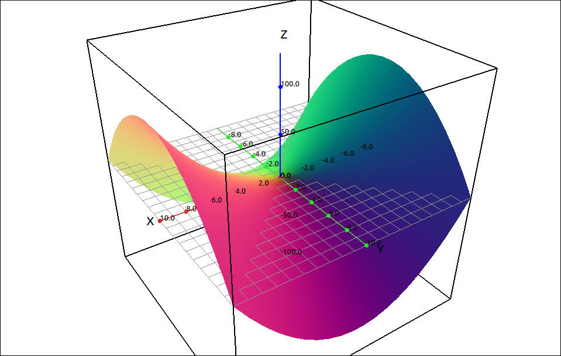
Shade by Surface Normals#
This mode is useful to view aspects of surface curvature using the color changes. It is also useful when plotting the planes defined by a linear system, it tends to make the planes easier to distinguish even when the planes are close to each other.
Shade by Camera and Normals#
This mode combines the surface normal algorithm with the camera position algorithm. In this mode the base color is not used. The colors are first determined by the surface normal algorithm and then changed in intensity to simulate two additional light sources. For example,
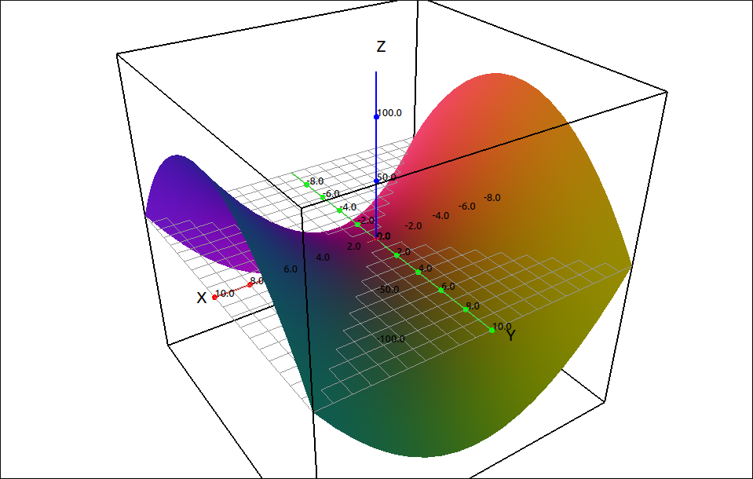
Shade by Camera and Normals#
Smooth Shading#
Smooth shading is when each triangle that defines a surface is colored in a way that makes the surface seem smooth. This mode does look better, but it requires between three and eight times the calculations as non-smooth shading. For example, the surface defined by the function \(z = f(x, y) = x^{2} - y^{2}\) with smooth shading on is pictured below,
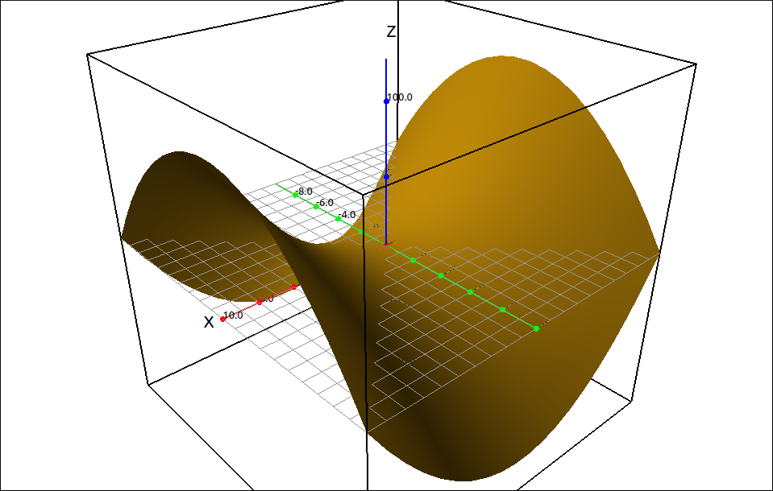
Smooth Shading On#
and the same surface with smooth shading off is pictured below.
Smooth Shading Off#
In general, you will want to keep smooth shading on unless you are doing some animations of the surface that are attached to sliders. In this case turning smooth shading off will significantly increase the animation speed.
Note
Since the implicit grid is only defined inside the viewing cube there is no clipping option with this type as there is with other surface types.
Example#
As a quick example, if we plot the expression in the dialog box above, \(\sin{\left(x \right)} + \sin{\left(y \right)} - \cos{\left(z \right)} = 0\) we get,
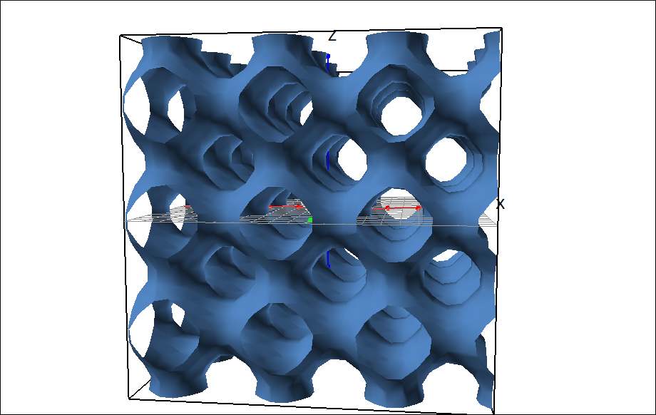
\(\sin{\left(x \right)} + \sin{\left(y \right)} - \cos{\left(z \right)} = 0\)#
If we increase the divisions to 50 in each direction we get a smoother surface.
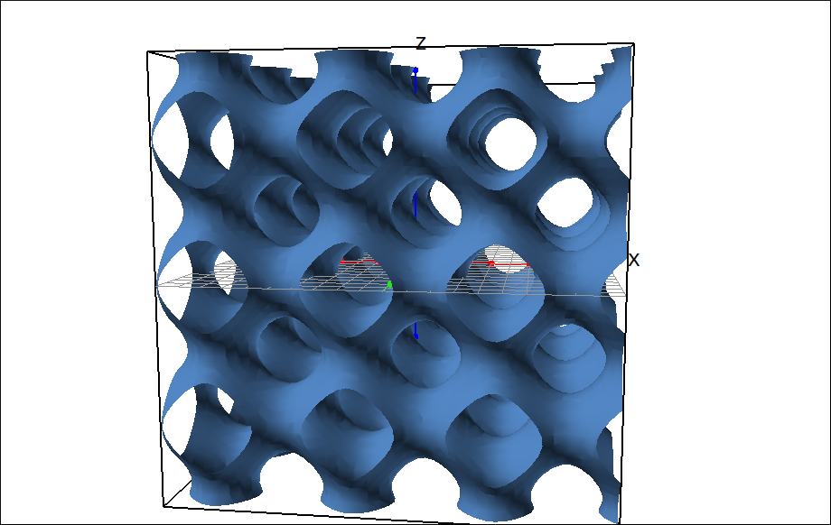
\(\sin{\left(x \right)} + \sin{\left(y \right)} - \cos{\left(z \right)} = 0\)#
As another example, this type of graph can be used to examine quadratic surfaces, even dynamically. If we input the expression, \(-1 + \frac{z^{2}}{c} + \frac{y^{2}}{b} + \frac{x^{2}}{a}\) we get sliders for a, b, and c, moving them we can dynamically see the shifting between the following surfaces.
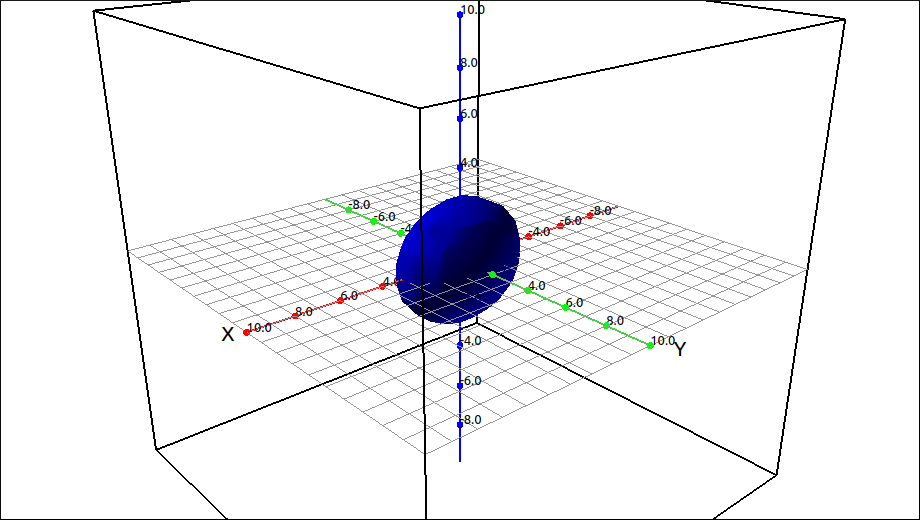
Quadratic Surface Example#
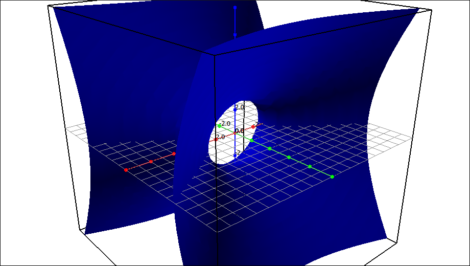
Quadratic Surface Example#
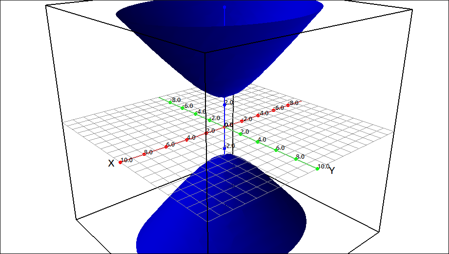
Quadratic Surface Example#